Primeira consulta
- Conversa sobre rotina, sono e história com a comida
- Avaliação corporal com bioimpedância
- Leitura dos exames
- Plano alimentar com substituições
- App com o plano e o diário por 45 dias
 Toda a equipe
Toda a equipe
Bruna Salvi, nutricionista em Florianópolis
Nutrição clínica e comportamental para quem cansou de recomeçar a dieta. Consultas na Trindade e online para todo o Brasil, com uma equipe para cada fase da vida.

Próximo horário livreconsultando a agenda
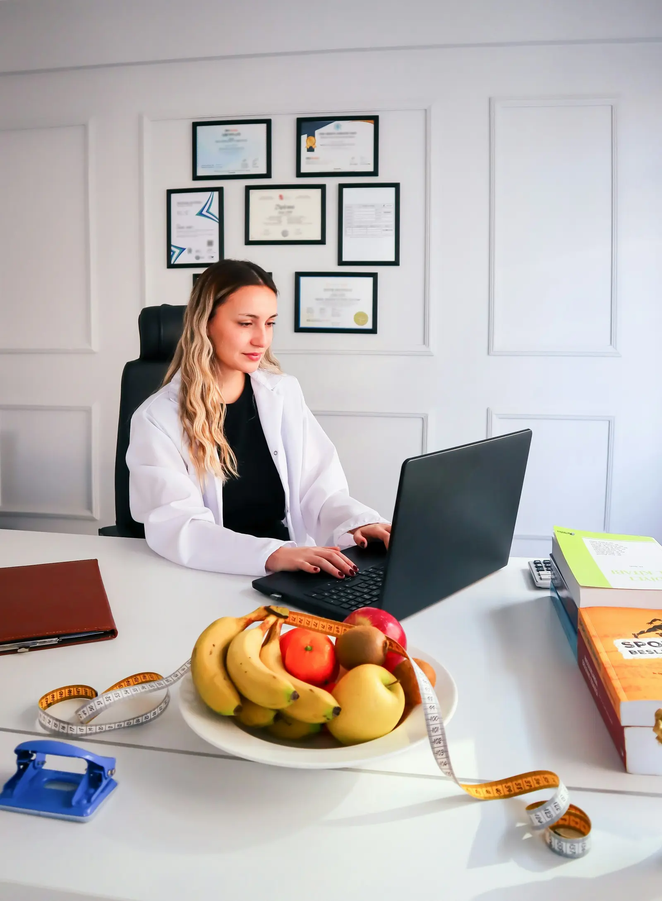
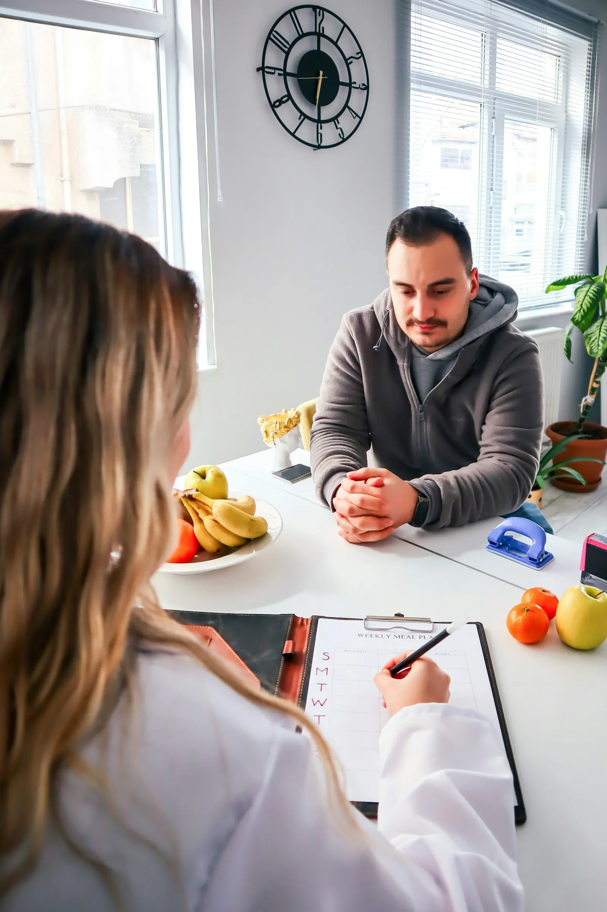
Prazer, Bruna
Atende há mais de dez anos pessoas que já tentaram de tudo e cansaram de recomeçar. O trabalho começa pela conversa: rotina, história com a comida, exames, sono e o que a pessoa gosta de comer. O plano vem depois, com substituições, e muda junto com a vida.
Plano bom é o que cabe na sua terça-feira comum, não o que funciona só na segunda.
O método Salvi
Primeiro, a conversa: rotina, sono, trabalho, o que você gosta de comer e o que já tentou. Sem julgamento e sem balança logo na entrada.
Bioimpedância, circunferências e leitura dos exames. Os números entram para orientar o plano, não para dar nota a você.
Um plano com substituições, receitas e lista de compras, pensado para a sua semana real, com espaço para o restaurante e a festa.
Retornos, mensagens e diário no app. O plano muda quando a vida muda, e a gente ajusta junto.
Especialidades e valores
Escolha a área para ver o que inclui cada consulta, quanto tempo leva e quanto custa. Todos os valores incluem o plano no app.

Perder peso sem brigar com a comida.
Para quem cansou de dieta que começa na segunda e termina na quarta. Trabalhamos fome, saciedade, rotina e as situações que levam a comer sem fome, com um plano que tem pão, festa e restaurante.
Nutricionista para emagrecimento em Florianópolis Toda a equipe
Toda a equipe
Bruna
AgendarComer para treinar, recuperar e chegar inteiro na prova.
Do primeiro mês de academia à maratona. O plano muda entre dia de treino e de descanso, acompanha a planilha do treinador e testa a estratégia de prova antes da largada.
Nutricionista esportivo em FlorianópolisDiego
AgendarDiego
AgendarDa barriga à lancheira, com a família inteira à mesa.
Pré-natal nutricional, introdução alimentar com prática de prevenção de engasgo e acompanhamento da criança que come pouco ou come sempre a mesma coisa.
Nutricionista para gestante e criança em Florianópolis Tainá
Tainá
 Tainá
Tainá
 Tainá
Tainá
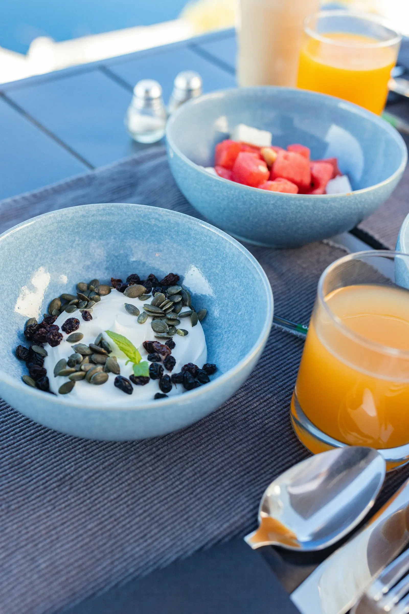
Investigar o sintoma antes de cortar o alimento.
Estufamento, intestino preso ou solto, SOP, endometriose e menopausa. Investigamos com diário de sintomas e exames, e qualquer exclusão tem prazo e reintrodução.
Nutricionista para saúde intestinal e da mulher em FlorianópolisLuana
AgendarLuana
Agendar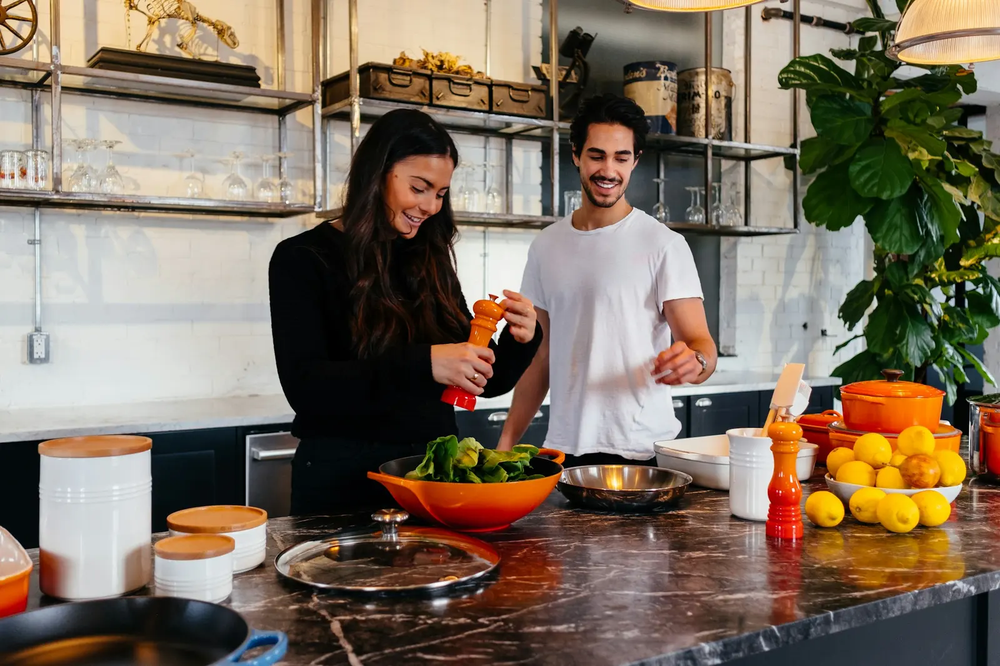
Medir, cozinhar e aprender junto.
Avaliação corporal avulsa, retornos e oficinas práticas na nossa cozinha-escola, em grupos pequenos.
 Toda a equipe
Toda a equipe
Diego e Luana
AgendarPede preparo: veja os combinados da consulta.
 Bruna e Tainá
Bruna e Tainá
Pix, débito e crédito em até 3x sem juros. Programas e pacotes em até 6x. Recibo com CPF e CRN para pedir reembolso ao plano de saúde.
Remarcação ou cancelamento sem custo até 24 horas antes. Tolerância de 15 minutos de atraso. Falta sem aviso conta como consulta realizada nos pacotes.
Alguns planos atendem direto e os outros por reembolso. Confira o seu plano.
Bastidores
Arraste para o lado ou use as setas.
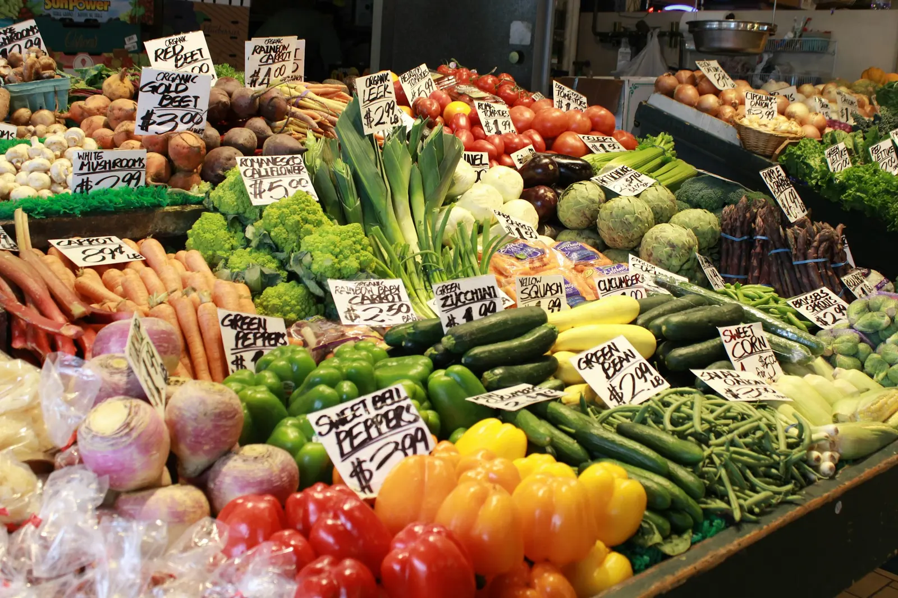
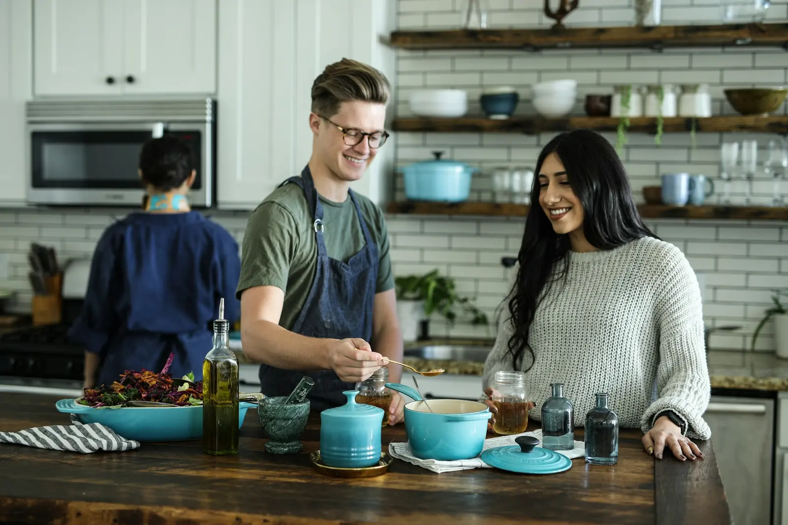
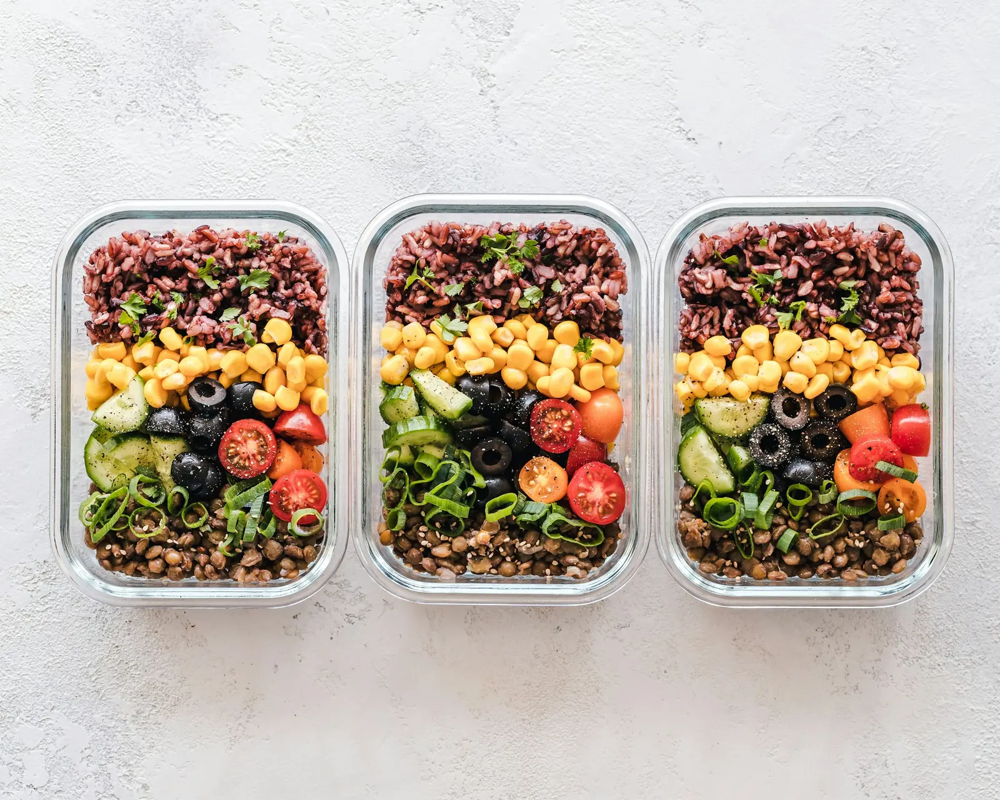
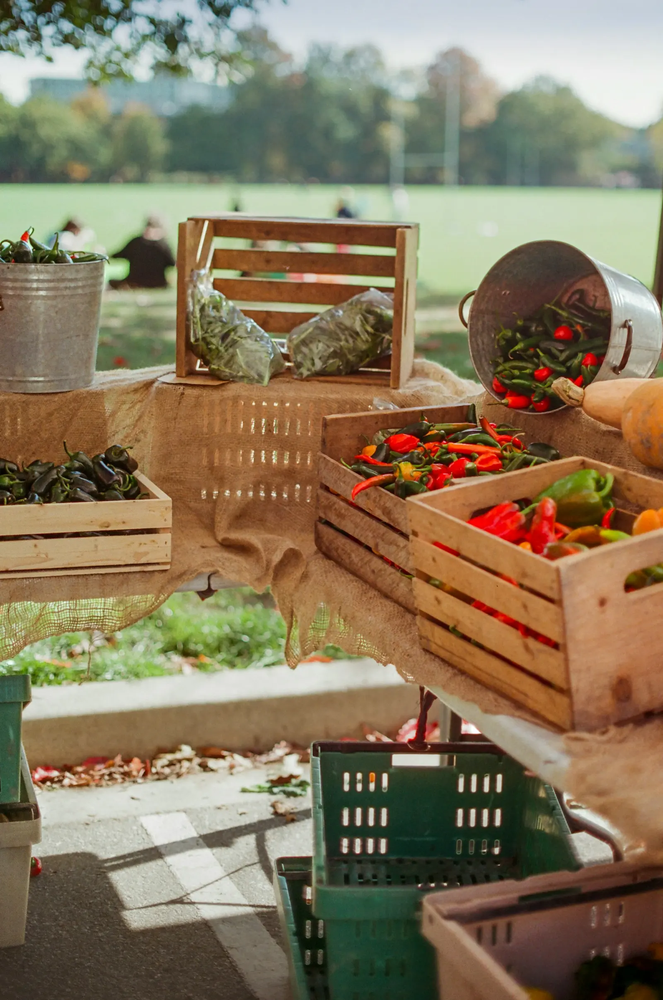
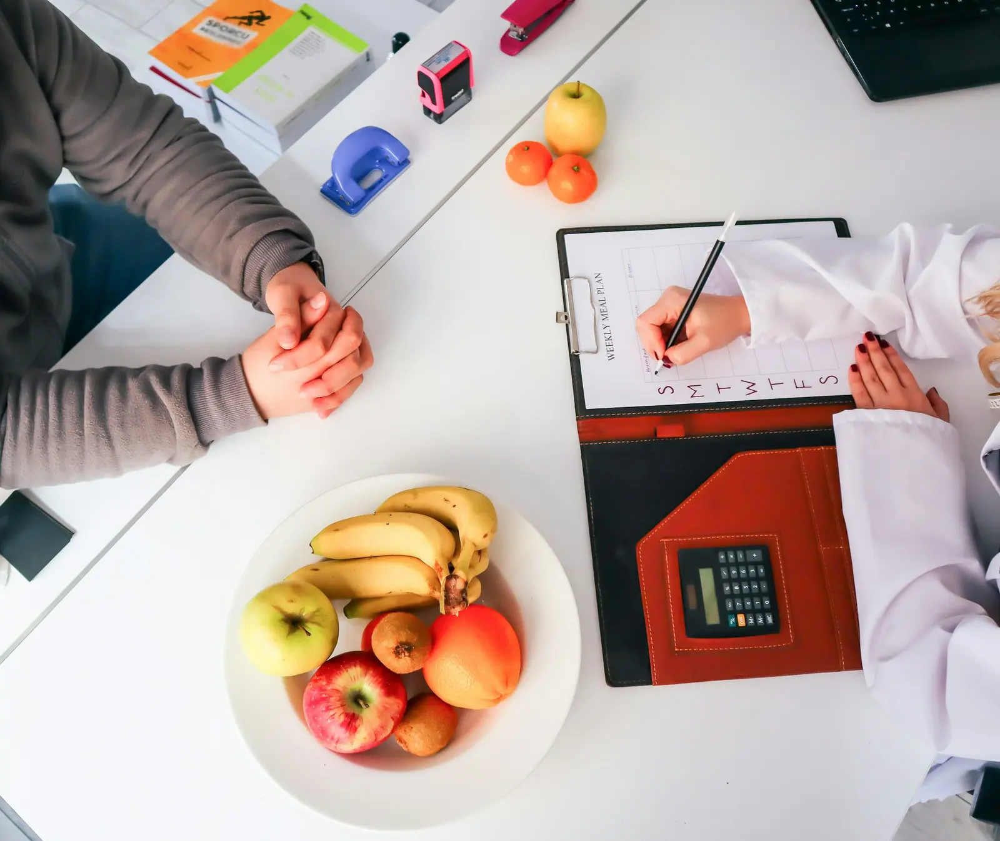
Tour virtual
Arraste a imagem para olhar em volta e use as portas ou a planta para mudar de sala. No teclado, as setas giram a vista.
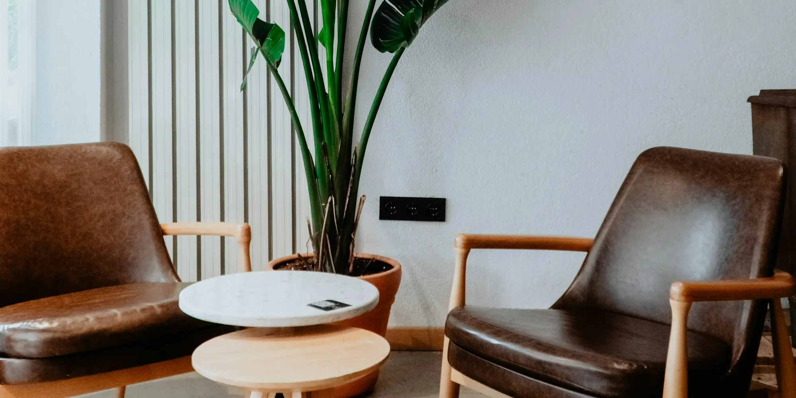
Arraste para olhar em volta
Equipe
Cada uma cuida de uma fase da vida. Todas trabalham com o mesmo método e conversam entre si sobre os casos.
Conhecer a equipeAgendamento online
Os horários seguem a agenda de cada profissional. O pedido chega no nosso WhatsApp e confirmamos em até 2 horas, no horário de atendimento.
Primeira vez? Escolha "Primeira consulta". Já é paciente? Use "Retorno" ou remarque pela Área do cliente.
Convênios
Digite o nome do seu plano. Alguns atendem direto, sem pagar na hora; nos outros, enviamos tudo para o reembolso no mesmo dia.
Comece a digitar para ver como funciona com o seu plano.
Avaliações no Google
4,9187 avaliações
Primeira vez que saio de uma consulta sem me sentir culpada. O plano tem pão, tem pizza no sábado e mesmo assim os exames melhoraram em três meses.
Fiz minha primeira maratona com o plano de prova do Diego. Testamos tudo nos longões e no dia não tive nenhum problema de estômago.
A oficina de introdução alimentar tirou todo o meu medo de engasgo. A Tainá explica com calma e responde todas as mensagens.
Anos com o intestino irritado e ninguém investigava. A Luana pediu um diário, ajustamos por etapas e hoje como de quase tudo.
Uso medicação para emagrecer e estava perdendo músculo. Com o acompanhamento, ajustamos a proteína e a força voltou nos treinos.
Meu filho de 5 anos comia cinco alimentos. Hoje experimenta coisas novas na mesa com a gente. Valeu cada consulta.
Na menopausa achei que nada ia funcionar. Plano simples, comida de verdade e um cuidado enorme na conversa.
Ganhei massa magra sem viver de frango com batata-doce. O Diego entende de treino e de rotina corrida.
Avaliações de demonstração. No site do cliente, o bloco mostra as avaliações reais do perfil da clínica no Google, atualizadas automaticamente.
Blog
Textos curtos da equipe sobre comportamento, esporte, infância e intestino.
Ver todos os artigos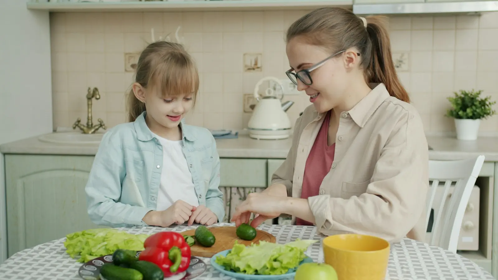
Galeria
Receitas da cozinha-escola, bastidores das oficinas e dicas rápidas da equipe.
Seguir no InstagramDúvidas
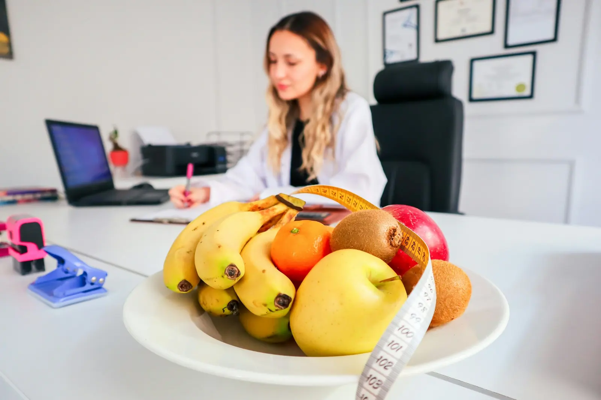
Dura 75 minutos. Conversamos sobre rotina, sono, trabalho, gostos e histórico, fazemos a avaliação corporal e lemos os exames. O plano chega no app em até 3 dias úteis, com substituições e receitas.
Se tiver exames de sangue dos últimos 6 meses, traga ou envie pelo WhatsApp. Se não tiver, tudo bem: indicamos o que vale pedir ao seu médico.
Sim, por vídeo, para todo o Brasil, com o mesmo tempo de consulta. A avaliação corporal é feita por medidas que você aprende a tirar em casa.
Alguns planos atendem direto e os outros por reembolso. Use a busca de convênios nesta página ou mande o nome do seu plano no WhatsApp.
Não. Ele parte do que você já come e gosta, tem substituições e espaço para restaurante, festa e fim de semana.
Pode. Com menos fome, é comum faltar proteína e perder músculo. Acompanhamos a alimentação junto com o seu médico, que prescreve e ajusta a medicação.
Depende do objetivo. A maioria das pessoas fica de 3 a 6 meses, com retornos a cada 30 a 45 dias, e depois segue com retornos mais espaçados.
Jejum de 3 horas, sem café e sem exercício intenso nas 12 horas anteriores, bexiga vazia e sem objetos de metal. Gestantes e pessoas com marca-passo não fazem bioimpedância; nesse caso usamos outras medidas.
Combinados da consulta
O horário fica reservado assim que confirmamos pelo WhatsApp. Lembramos da consulta na véspera, com o preparo da avaliação corporal.
Tolerância de 15 minutos. Depois disso, a consulta acontece no tempo que resta ou é remarcada, para não atrasar quem vem depois.
Sem custo até 24 horas antes, pelo WhatsApp ou pela Área do cliente. Nos pacotes, falta sem aviso conta como encontro realizado.
Se o plano não couber na sua rotina, ajustamos sem custo em até 15 dias depois da consulta, por mensagem ou em um encontro rápido.
Pede preparo: jejum de 3 horas, sem café e sem exercício intenso nas 12 horas anteriores e bexiga vazia. Não é feita em gestantes nem em quem usa marca-passo.
Gestantes e crianças são atendidas só pelas profissionais da área. Menores de 18 anos vêm com um responsável. Quem usa medicação para emagrecer ou controlar a glicose é acompanhado em conjunto com o médico, que prescreve e ajusta a dose.
Contato